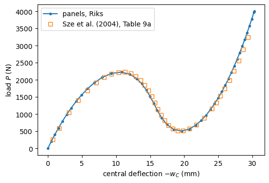

Non-linear static analysis with the arc-length methods#
This example traces the snap-through of a hinged cylindrical roof under a central point load past its limit point, and compares the load-deflection path with the literature.
With load control, the Newton-Raphson method fails at a limit point, where the tangent stiffness matrix becomes singular and the load must decrease to follow the path. The arc-length methods add the load factor \(\lambda\) to the unknowns, with a constraint on the length \(\Delta s\) of each step along the path in the space of \((\boldsymbol{c}, \lambda)\):
where \(\boldsymbol{u}_{ref}\) is the linear solution for \(\lambda = 1\), which makes \(\Delta s\) independent of the units of the model, and \(\psi\) is a constant. Riks’s method iterates on the plane normal to the predictor of each step, while Crisfield’s method keeps the spherical constraint. Both are implemented in structsolve, selected with NL_method='arc_length_riks' or NL_method='arc_length_crisfield' of
structsolve.Analysis. The methods calc_fext, calc_fint, calc_kC and calc_kG of the Shell object are passed directly to structsolve.Analysis.
[1]:
%matplotlib inline
import numpy as np
import matplotlib.pyplot as plt
from IPython.display import Markdown, display
from structsolve import Analysis
from panels.shell import Shell
def results_table(rows):
"""Markdown table of (quantity, panels, reference, source) rows"""
out = ['| quantity | panels | reference | relative difference | reference source |',
'|---|---|---|---|---|']
for name, val, ref, src in rows:
out.append('| %s | %.6g | %.6g | %+.2e | %s |'
% (name, val, ref, (val - ref)/abs(ref), src))
display(Markdown('\n'.join(out)))
The hinged roof of Sabir and Lock#
The benchmark of Sabir and Lock (1972), as given by Sze et al. (2004), Section 3.8 and Fig. 9a, is a shallow cylindrical panel of radius \(R = 2540\) mm and length \(2L = 508\) mm along the axis, with free curved edges. Its straight edges are \(R\theta\) apart, \(\theta = 0.2\) rad, and hinged: \(u = v = w = 0\) with the rotations free. The panel is isotropic, \(E = 3102.75\) MPa, \(\nu = 0.3\), \(h = 12.7\) mm, and is loaded by a point force at its center. Units
are N, mm and MPa. The model is cylshell_clpt_donnell with \(12 \times 12\) terms and \(24 \times 24\) integration points. A point load needs many terms: with \(6 \times 6\) terms the panel is about 25% too stiff at the start of the path.
[2]:
s = Shell(model='cylshell_clpt_donnell', a=508., b=2540.*0.2, r=2540.,
stack=[0.], plyt=12.7, laminaprop=(3102.75, 0.3), m=12, n=12)
s.nx = 2*s.m
s.ny = 2*s.n
for edge in ('x1', 'x2', 'y1', 'y2'):
for field in 'uvw':
setattr(s, edge + field, 1.)
setattr(s, edge + field + 'r', 1.)
for edge in ('y1', 'y2'): # hinged straight edges
for field in 'uvw':
setattr(s, edge + field, 0.)
Riks method#
The reference load \(P_{ref} = 4000\) N is larger than the limit load, so the analysis must pass the limit point and the snap-through before reaching \(\lambda = 1\). initialInc is the first increment of \(\lambda\). maxArcLength and maxInc limit the step, so that the path is sampled finely enough to show the limit point and the minimum load after it.
[3]:
Pref = 4000.
s.add_point_load(s.a/2., s.b/2., 0., 0., -Pref, cte=False)
an = Analysis(s.calc_fext, s.calc_fint, s.calc_kC, s.calc_kG)
an.NL_method = 'arc_length_riks'
an.initialInc = 0.05
an.maxArcLength = 50.
an.maxInc = 0.02
increments, cs = an.static(NLgeom=True, silent=True)
lbds = np.asarray(increments)
wc = np.array([s.uvw(c=c, gridx=3, gridy=3)[1]['w'][1, 1] for c in cs])
for lbd, w in zip(lbds, wc):
print(' load %7.1f N, center deflection %8.4f mm' % (lbd*Pref, w))
load 199.6 N, center deflection -0.4948 mm
load 398.3 N, center deflection -1.0148 mm
load 596.0 N, center deflection -1.5634 mm
load 792.4 N, center deflection -2.1448 mm
load 987.5 N, center deflection -2.7645 mm
load 1180.7 N, center deflection -3.4295 mm
load 1371.5 N, center deflection -4.1494 mm
load 1559.0 N, center deflection -4.9374 mm
load 1741.3 N, center deflection -5.8129 mm
load 1914.8 N, center deflection -6.8052 mm
load 2071.4 N, center deflection -7.9582 mm
load 2189.7 N, center deflection -9.3172 mm
load 2226.0 N, center deflection -10.7913 mm
load 2163.4 N, center deflection -12.0573 mm
load 2039.8 N, center deflection -13.0264 mm
load 1883.9 N, center deflection -13.7900 mm
load 1708.1 N, center deflection -14.4265 mm
load 1517.7 N, center deflection -14.9898 mm
load 1316.1 N, center deflection -15.5232 mm
load 1106.7 N, center deflection -16.0709 mm
load 895.8 N, center deflection -16.6898 mm
load 698.0 N, center deflection -17.4617 mm
load 550.2 N, center deflection -18.4760 mm
load 507.9 N, center deflection -19.6479 mm
load 564.6 N, center deflection -20.7274 mm
load 674.8 N, center deflection -21.6546 mm
load 812.6 N, center deflection -22.4616 mm
load 966.3 N, center deflection -23.1800 mm
load 1130.3 N, center deflection -23.8313 mm
load 1301.3 N, center deflection -24.4298 mm
load 1477.6 N, center deflection -24.9859 mm
load 1657.8 N, center deflection -25.5066 mm
load 1841.3 N, center deflection -25.9976 mm
load 2027.3 N, center deflection -26.4630 mm
load 2215.6 N, center deflection -26.9061 mm
load 2405.8 N, center deflection -27.3295 mm
load 2597.6 N, center deflection -27.7355 mm
load 2790.9 N, center deflection -28.1257 mm
load 2985.4 N, center deflection -28.5018 mm
load 3181.2 N, center deflection -28.8650 mm
load 3378.0 N, center deflection -29.2164 mm
load 3575.8 N, center deflection -29.5569 mm
load 3774.5 N, center deflection -29.8875 mm
load 3974.0 N, center deflection -30.2088 mm
load 4000.0 N, center deflection -30.2499 mm
Equilibrium and the path#
Every converged step is in equilibrium: the residual \(\boldsymbol{F}_{int} - \lambda \boldsymbol{F}_{ext}\) is small relative to the forces. The limit point is the last converged step before the first decrease of the load.
[4]:
fext = s.calc_fext()
residuals = [np.linalg.norm(s.calc_fint(c=c) - lbd*fext)
/ max(np.linalg.norm(lbd*fext), np.linalg.norm(s.calc_fint(c=c)))
for lbd, c in zip(lbds, cs)]
print('largest relative residual of the converged steps: %.2e'
% max(residuals))
ilim = np.argmax(np.diff(lbds) < 0)
imin = ilim + np.argmin(lbds[ilim:])
print('limit point: %.1f N at w = %.3f mm; minimum after it: %.1f N at '
'w = %.3f mm; final: %.1f N at w = %.3f mm'
% (lbds[ilim]*Pref, wc[ilim], lbds[imin]*Pref, wc[imin],
lbds[-1]*Pref, wc[-1]))
largest relative residual of the converged steps: 4.63e-09
limit point: 2226.0 N at w = -10.791 mm; minimum after it: 507.9 N at w = -19.648 mm; final: 4000.0 N at w = -30.250 mm
The load-deflection path against the path of Sze et al. (2004), Table 9a, p. 1565: their ABAQUS S4R results as \(P/P_{max}\) against \(-W_C\), with \(P_{max} = 3000\) N (Fig. 9a, p. 1564), converted to \(P = 3000\, P/P_{max}\) in N; the deflection is in mm in both.
[5]:
PMAX = 3000.
# Sze et al. (2004), Table 9a, p. 1565, 12.7 thick isotropic roof: (P/Pmax, -W_C)
SZE = np.array([
(0.0877, 0.693), (0.1980, 1.638), (0.3473, 3.087), (0.4686, 4.477),
(0.5647, 5.802), (0.6381, 7.057), (0.6908, 8.237), (0.7246, 9.339),
(0.7412, 10.358), (0.7421, 11.293), (0.7286, 12.141), (0.7023, 12.903),
(0.6649, 13.583), (0.6182, 14.188), (0.5643, 14.728), (0.5055, 15.217),
(0.4442, 15.676), (0.3830, 16.125), (0.3245, 16.590), (0.2717, 17.094),
(0.2272, 17.657), (0.1940, 18.299), (0.1750, 19.028), (0.1729, 19.852),
(0.1905, 20.771), (0.2303, 21.780), (0.2950, 22.875), (0.3871, 24.049),
(0.4443, 24.663), (0.5093, 25.293), (0.5826, 25.940), (0.6644, 26.601),
(0.7551, 27.276), (0.8549, 27.964), (0.9643, 28.663), (1.0835, 29.374)])
sze_P, sze_W = PMAX*SZE[:, 0], SZE[:, 1]
fig, ax = plt.subplots(figsize=(6, 4))
ax.plot(-np.r_[0, wc], np.r_[0, lbds]*Pref, 'o-', ms=3, label='panels, Riks')
ax.plot(sze_W, sze_P, 's', mfc='none', ms=6,
label='Sze et al. (2004), Table 9a')
ax.set_xlabel('central deflection $-w_C$ (mm)')
ax.set_ylabel('load $P$ (N)')
ax.legend()
plt.show()

Results#
The central deflection grows monotonically along the path, so the load of panels at each deflection of Sze et al. is interpolated linearly between the converged steps, and compared at a few points of the path: on the rising branch, at the first maximum (the limit load, compared with the largest converged load, since the load is nearly constant around the limit point), at the minimum after the snap-through, and on the stiffening branch.
[6]:
P_panels = np.interp(sze_W, -np.r_[0, wc], np.r_[0, lbds]*Pref)
isze_lim = np.argmax(np.diff(sze_P) < 0)
isze_min = isze_lim + np.argmin(sze_P[isze_lim:])
rows = [('limit load (N)', lbds[ilim]*Pref, sze_P[isze_lim],
'Sze et al. (2004), Table 9a, $P/P_{max} = %.4f$' % SZE[isze_lim, 0]),
('minimum load after the limit point (N)', lbds[imin]*Pref,
sze_P[isze_min],
'Sze et al. (2004), Table 9a, $P/P_{max} = %.4f$' % SZE[isze_min, 0])]
for i in (0, 4, 15, 26, 34):
rows.append(('$P$ at $-w_C = %.3f$ mm (N)' % sze_W[i], P_panels[i],
sze_P[i], 'Sze et al. (2004), Table 9a, $P/P_{max} = %.4f$'
% SZE[i, 0]))
results_table(rows)
diff = P_panels/sze_P - 1
print('relative difference of P over the 36 points: from %+.1f%% to %+.1f%%'
% (100*diff.min(), 100*diff.max()))
quantity |
panels |
reference |
relative difference |
reference source |
|---|---|---|---|---|
limit load (N) |
2226.04 |
2226.3 |
-1.15e-04 |
Sze et al. (2004), Table 9a, \(P/P_{max} = 0.7421\) |
minimum load after the limit point (N) |
507.945 |
518.7 |
-2.07e-02 |
Sze et al. (2004), Table 9a, \(P/P_{max} = 0.1729\) |
\(P\) at \(-w_C = 0.693\) mm (N) |
275.302 |
263.1 |
+4.64e-02 |
Sze et al. (2004), Table 9a, \(P/P_{max} = 0.0877\) |
\(P\) at \(-w_C = 5.802\) mm (N) |
1738.99 |
1694.1 |
+2.65e-02 |
Sze et al. (2004), Table 9a, \(P/P_{max} = 0.5647\) |
\(P\) at \(-w_C = 15.217\) mm (N) |
1431.81 |
1516.5 |
-5.58e-02 |
Sze et al. (2004), Table 9a, \(P/P_{max} = 0.5055\) |
\(P\) at \(-w_C = 22.875\) mm (N) |
901.054 |
885 |
+1.81e-02 |
Sze et al. (2004), Table 9a, \(P/P_{max} = 0.2950\) |
\(P\) at \(-w_C = 28.663\) mm (N) |
3072.32 |
2892.9 |
+6.20e-02 |
Sze et al. (2004), Table 9a, \(P/P_{max} = 0.9643\) |
relative difference of P over the 36 points: from -5.6% to +6.7%
The limit load agrees with that of Sze et al. (2004) within 0.1%, and the minimum load after the snap-through within about 2%. Along the whole path the loads differ by up to about 7%: panels is stiffer on the rising branch, softer after the limit point and stiffer again on the final branch. Two sources of the difference are the number of terms, since the concentrated deformation under the point load converges slowly with the Ritz series (with \(6 \times 6\) terms the path is about 25%
stiffer at the start), and the kinematics, Donnell’s moderate-rotation shallow-shell theory here against the finite-rotation S4R shell elements of ABAQUS. The notebook sze2004_hinged_roofs compares the limit loads of all the roofs of Sze et al. (2004) with the shear-deformation models.
The same analysis runs with the Crisfield method by setting an.NL_method = 'arc_length_crisfield'.
References#
Sabir and A. C. Lock, “The application of finite elements to the large deflection geometrically nonlinear behaviour of cylindrical shells”. In: C. A. Brebbia and H. Tottenham (eds), Variational Methods in Engineering, Southampton University Press, Southampton, UK, 1972, pp. 7/54-7/65 (as cited by Sze et al., 2004).
Sze, X. H. Liu and S. H. Lo, “Popular benchmark problems for geometric nonlinear analysis of shells”. Finite Elements in Analysis and Design, 40:1551-1569, 2004. https://doi.org/10.1016/j.finel.2003.11.001.